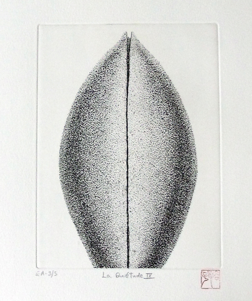
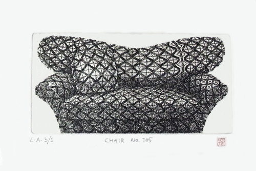
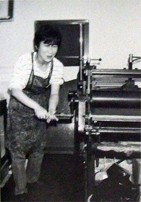

Museu Olho Latino
Mezanino do Centro de Convenções "Victor Brecheret".
Visitação: de terça a sábado, das 09h às 17h.
Endereço: Al. Prof. Lucas Nogueira Garcêz, 511 - Parque das Águas - Estância de Atibaia, SP.
Telefone: (11) 4412-3287
Acontece
Museu Olho Latino é a instituição brasileira escolhida para receber a
doação de obras em memória da artista japonesa Hiroko Okamoto
As obras doadas estarão em exposiçãoa partir
de 14 de outubro no Museu Olho Latino
de 14 de outubro no Museu Olho Latino




Algumas gravuras
A mostra “Sofá, Trama e Natureza”, composta por 14 gravuras em metal da artista japonesa Hiroko Okamoto, está aberta ao público de 14 de outubro a 26 de novembro no Museu Olho Latino, em Atibaia, SP. A curadoria é do prof. Dr. Paulo Cheida Sans.
A exposição está inserida na série de eventos em comemoração aos 10 anos do Museu Olho Latino. As obras expostas foram doadas recentemente pela Associação Hiroko Okamoto, sediada em Paris, que tem escolhido museus e instituições em vários países para preservar a memória da artista. O Museu Olho Latino é a única instituição brasileira a receber obras da artista como doação.
A artista:
Hiroko Okamoto nasceu no Japão em 1957. Estudou pintura na Universidade Musashino, em Tóquio, e depois se especializou em gravura na École des Beaux-Arts Sokei. Realizou a primeira exposição individual em Tóquio em 1981. Ela era um membro da Associação Japonesa de gravura desde 1982.
No outono de 2001, impulsionada pelos sonhos da juventude, escolheu Paris para fixar residência. Iniciou uma nova série de desenhos e gravuras sobre o tema da natureza (árvores, folhas, plantas).

Hiroko Okamoto
Ao longo de sua carreira a artista recebeu inúmeros prêmios por suas gravuras, como o “Grande Prêmio” do concurso realizado pelo Museu Shibuya, Tóquio, Japão. Ela produziu um total de mais de 3000 gravuras e desenhos. Com persistência, ela aperfeiçoou sua arte, num equilíbrio entre a simplicidade e o requinte.
Em 2007, Hiroko Okamoto morreu, aos cinquenta anos, durante estada em Tóquio.
A Associação:
O objetivo da Associação é manter viva a memória da artista Hiroko Okamoto, uma importante gravadora japonesa. Durante sua carreira, ela expôs com Moore, Enzo Cucchi, Jean-Michel Folon, Alechinsky Pierre e Claes Oldenburg.
Em sua homenagem, formou-se uma associação composta por artistas e colecionadores, presidida por Olga Worm-Mignot, com o objetivo de manter viva a memória de sua arte.
Além do Museu Olho Latino, as obras da artista estão presentes nas seguintes instituições: Museu da Bienal Internacional de Gravura, Acqui Terme (Itália); Biblioteca Nacional da França, Ville de Saint-Ouen (França); Centro de Gravura e Imagens Impressas, La Louvière (Bélgica); Artothèque d'Amiens (França); Artotec Lons-le-Saunier (França); Cité Internationale des Arts, Paris (França); Maison de la Méditerranée, Médiathèque de Carcès (França); Médiathèque Hermeland, Saint-Herblain (França); Médiathèque Benjamin Rabier, La Roche-sur-Yon (França); Biblioteca Médiathèque, Mulhouse (França); Fundação Taylor, Paris (França); Museu Municipal Raymond Lafage, Lisle-sur-Tarn (França); Associação Movimento de Arte Contemporânea, Chamalières (França); Artothèque ASCAP, Montbéliard (França); Museu do Design e Impressão Original, Gravelines (França); Médiathèque Crépeau Michel, La Rochelle (França); Les Moyens du Bord, Morlaix (França); Pontificia Universidad Católica del Perú, Lima (Peru).
A mostra “Sofá, Trama e Natureza” poderá ser visitada até 10 de novembro, de terça a sábado, das 09 às 17h, no Museu Olho Latino - mezanino do Centro de Convenções e Eventos “Victor Brecheret” - na Al. Lucas Nogueira Garcez, 511, Parque das Águas, na Estância de Atibaia, SP.
{kind=link}
(clique para ampliar)
Exposição: “Sofá, Trama e Natureza” da artista japonesa Hiroko Okamoto.
Obras doadas pela Associação Hiroko Okamoto, sediada em Paris, para o acervo do Museu Olho Latino.
Curadoria: Paulo Cheida Sans.
Período da mostra: 14 de outubro a 10 de novembro de 2011. (prorrogada até 26 de novembro de 2011)
Visitação: de terça a sábado, das 09h às 17h.
Local: Museu Olho Latino (mezanino do Centro de Convenções e Eventos “Victor Brecheret”).
Endereço: Al. Lucas Nogueira Garcez, 511 - Estância de Atibaia, SP.
Realização: Museu Olho Latino e Prefeitura Municipal da Estância de Atibaia.
Telefone: (11) 4412 7776.
Site: www.olholatino.com.br
E-mail: Este endereço de e-mail está protegido contra spambots. Você deve habilitar o JavaScript para visualizá-lo.
Curadoria: Paulo Cheida Sans.
Período da mostra: 14 de outubro a 10 de novembro de 2011. (prorrogada até 26 de novembro de 2011)
Visitação: de terça a sábado, das 09h às 17h.
Local: Museu Olho Latino (mezanino do Centro de Convenções e Eventos “Victor Brecheret”).
Endereço: Al. Lucas Nogueira Garcez, 511 - Estância de Atibaia, SP.
Realização: Museu Olho Latino e Prefeitura Municipal da Estância de Atibaia.
Telefone: (11) 4412 7776.
Site: www.olholatino.com.br
E-mail: Este endereço de e-mail está protegido contra spambots. Você deve habilitar o JavaScript para visualizá-lo.